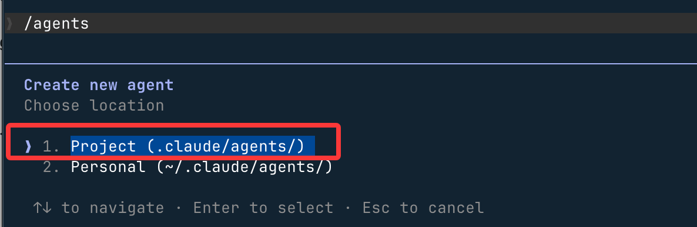
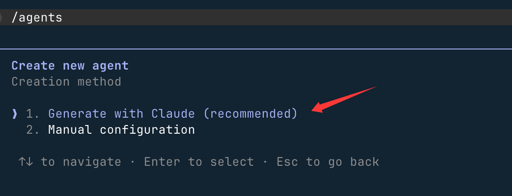
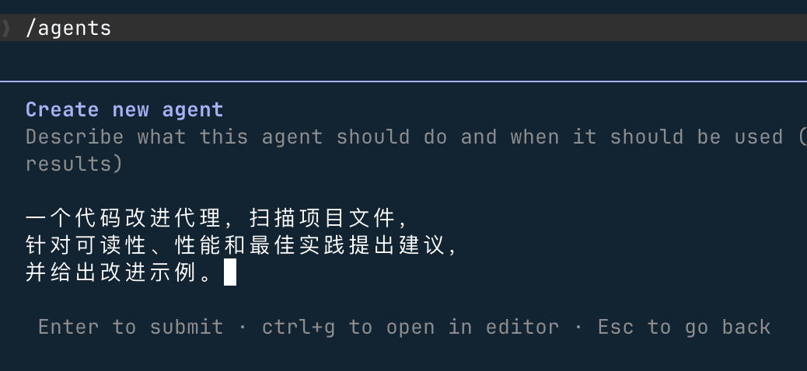
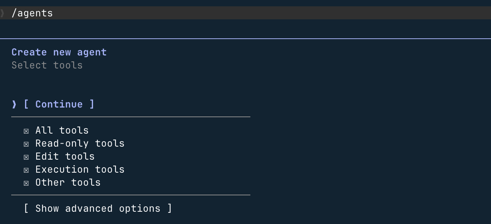
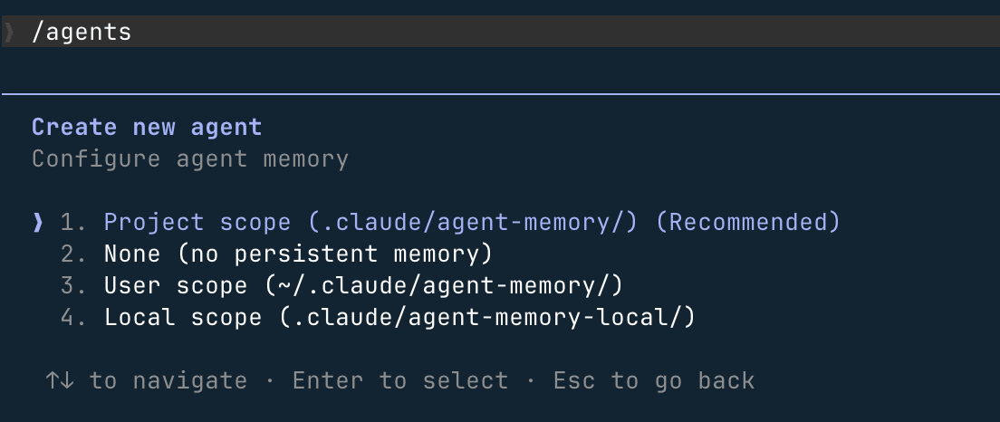

Claude Code Subagent
In Claude Code, you can createspecialized AI subagentsto handle specific types of tasks, achieving better context isolation, stronger constraint control, and higher execution efficiency.
Subagents run inindependent context windows. Each subagent can have its own system prompt, a specified model, explicit tool access permissions, independent permission modes, and cross-session persistent memory. When Claude determines that your request matches the description of a subagent, it automatically delegates the task to that subagent, which completes it independently and returns the result.
Subagents only receive their own system prompt and basic environment information (such as the working directory),and do not inherit the full Claude Code system prompt,which ensures pure and controllable behavior.
Why use subagents
The core value of subagents lies inisolation + specialization,mainly reflected in the following aspects:
Preserve main conversation context: Put "heavy tasks" such as exploration and log analysis into subagents, so the main conversation only receives conclusion summaries and is not flooded with large amounts of intermediate output. Research shows that running three subagents in parallel to analyze a 50,000-line project takes about 45 seconds, while serial execution takes 3 minutes.
Enforce constraints: Limit subagent capabilities through tool whitelists or blacklists, such as read-only analysis or prohibiting dangerous commands.
Behavioral specialization: Design dedicated AI for specific domains (code review, debugging, data analysis), clearly stating the agent's capability boundaries in the system prompt to avoid unnecessary invocations.
Control costs: Assign simple tasks to Haiku and complex analysis to Sonnet, and use environment variables toCLAUDE_CODE_SUBAGENT_MODELuniformly set the model used by all subagents.
Cross-project reuse: User-level subagents are configured once and available across all projects.
Subagent vs Multi-agent
These two concepts are easy to confuse; the difference lies in task granularity and execution scope:
| Comparison item | Subagent | Multi-agent |
|---|---|---|
| Execution scope | Started within a single Claude Code session, returns results after processing subtasks | Multiple Claude Code sessions run in parallel or serially, typically managed by an orchestrator. |
| Context | Independent context window, isolated from the main conversation. | Each session has a completely independent context. |
| Nesting | Subagents cannot create further subagents (use Skills when nesting is needed). | Can coordinate multi-level tasks via an orchestrator. |
| Use cases | Focused subtasks, large output isolation, specialized analysis. | Full-featured development pipeline (design → implementation → test → release). |
Built-in subagents
Claude Code comes with several built-in subagents that are typically used automatically, requiring no manual configuration.
1. Explore (Exploration agent)
Used for read-only searching and analyzing the codebase. The model defaults to Haiku (fast, low latency), and only read-only tools are enabled (cannot Edit/Write). When Claude needs to view code without modifying it, it automatically uses the Explore agent. It supports different exploration depths:quick、medium、very thorough。
2. Plan (Planning agent)
Collects codebase information in planning mode to help Claude understand the project structure and build context for subsequent solution design. Only read-only tools are enabled, allowing safe collection of planning information without creating nested agents.
3. General-purpose (General-purpose agent)
Used for complex, multi-step tasks. All tools are enabled, and it inherits the model from the main conversation. It suits comprehensive scenarios of "view + modify + reason" and tasks that require multi-step code modifications.
4. Other internal agents
| Agent name | Description |
|---|---|
| Bash | Run Shell commands in an independent context |
| statusline-setup | Configure terminal status bar display |
| Claude Code Guide | Answer questions related to Claude Code usage |
Create your first subagent
1. Open the subagent management interface
Run the following command in Claude Code to open the full subagent management interface:
/agents
This interface provides all subagent management capabilities: view all available agents (built-in / user-level / project-level / plugin), create new agents, edit existing agents, and see which version actually takes effect when there is a name conflict.
2. Choose to create a user-level subagent
In the interface, selectCreate new agent:

then selectProject (.claude/agents/)The agent file will be saved to the .claude/agents/ directory in the current directory. If you select~/.claude/agents/directory, it will take effect for all projects:

Use Claude's recommendation:

3. Describe the agent's responsibilities
You can directly tell Claude in natural language what this agent should do, and Claude will automatically generate the system prompt and initial configuration. For example:
一个代码改进代理，扫描项目文件， 针对可读性、性能和最佳实践提出建议， 并给出改进示例。

After generation, press theekey to manually edit all configuration content.
4. Configure tool permissions and model
- Only code review → check only read-only tools (Read / Grep / Glob)
- Need to modify code → keep the Edit / Write tools
- For the model, it is recommended to chooseSonnet, which offers a balanced mix of analytical capability and execution speed.
Just select Continue and press Enter:

For the following options, just press Enter to accept the defaults.
5. Select memory scope (optional)
- SelectUser: in
~/.claude/agent-memory/establish persistent memory and accumulate experience across all projects - SelectNone: do not retain learning outcomes, start from scratch on every task.

6. Use the agent you just created
使用 code-improver 子代理为此项目提出改进建议

The agent runs in an independent context and, upon completion, returns a summary of results to the main conversation.
Scope of subagents
A subagent is essentially a Markdown file with YAML frontmatter; its storage location determines its scope and priority:
| Storage location | Scope | Priority |
|---|---|---|
CLI --agentsFlag |
Current session only | Highest |
.claude/agents/ |
Current project | 高 |
~/.claude/agents/ |
All projects (global) | 中 |
| Plugin agents | Plugin scope | Lowest |
When subagents with the same name exist in different locations, the one with higher priority overrides the lower one. You can use the/agentscommand to check which version is actually in effect.
Recommendations for choosing a storage location: project agent (.claude/agents/) can be committed with the code for team sharing; user agents (~/.claude/agents/) store personal habits and general-purpose tools, effective across projects; CLI agents (--agents) are used for temporary tests or automation scripts and are not persisted to disk.
Configuration file structure
Each subagent configuration file consists of two parts: YAML frontmatter (metadata and configuration) and Markdown body (system prompt).
Example
name: code-reviewer # Required: unique identifier, lowercase letters + hyphens
description: Reviews code for quality, best practices, and security issues.
Invoke when the user asks to review, audit, or check code quality.
# Required: determines when Claude automatically invokes this agent; recommended format is "when to invoke + what it can do"
tools: Read, Grep, Glob # Tool whitelist (only these tools can be used)
model: sonnet # Specified model: haiku / sonnet / opus / inherit
permissionMode: default # Permission mode (see Permission Modes section below)
memory: project # Persistent memory scope (see Memory section below)
---
You are a senior code reviewer.
Analyze code and provide actionable feedback organized by severity: Critical / Major / Minor.
Update your agent memory with recurring patterns, conventions, and known issues you discover.
Complete field description
| Field | Required | Description |
|---|---|---|
name |
Required | Unique identifier, also the name used for explicit invocation. Format: lowercase letters + hyphens, e.g.code-reviewer |
description |
Required | The most important field; whether and when Claude automatically invokes this agent depends entirely on it, so be sure to clearly describe the usage scenarios |
tools |
Optional | Tool whitelist; once set, only the listed tools can be used, and MCP tools are also excluded |
disallowedTools |
Optional | Tool blacklist; inherits all tools from the main conversation but excludes the listed tools (MCP tools are retained) |
model |
Optional | Specified model; can be set tohaiku、sonnet、opus, a full model ID, orinherit(default, inherits from main conversation) |
permissionMode |
Optional | Permission behavior control, see the Permission Modes section below |
memory |
Optional | Persistent memory scope:user / project / local, see the Memory section below |
background |
Optional | When set totrue, the agent always runs in the background (does not block the main conversation) |
isolation |
Optional | When set toworktree, runs in a temporary git worktree, completely isolated from the main repository |
skills |
Optional | List of Skills automatically loaded when this agent starts |
hooks |
Optional | Lifecycle hooks:SubagentStart / SubagentStop / PreToolUse / PostToolUse |
Difference between tools and disallowedTools
| Configuration Method | Behavior | Typical Scenario |
|---|---|---|
| Neither set | Inherits all tools from the main conversation, including MCP tools | General-purpose agents that need no restrictions |
Only settools |
Can only use tools in the whitelist; MCP tools are excluded | Read-only analysis agents, strictly constrained scenarios |
Only setdisallowedTools |
Inherits all tools, excludes blacklisted tools, MCP tools retained | Retains MCP capabilities but forbids write operations |
| Both set | ApplydisallowedToolsfirst, then filter from the remaining tools bytools |
Fine-grained control of tool access |
Example
---
name: safe-researcher
description: Research agent with read-only access. Use when analyzing code without making changes.
tools: Read, Grep, Glob, Bash # Only these four tools are enabled; Write and Edit are not in the whitelist and cannot be used
---
Example
---
name: no-writes
description: Analysis agent that inherits all tools except file writes.
disallowedTools: Write, Edit # MCP tools are retained; only Write and Edit are excluded
---
Permission modes
ThroughpermissionModefield controls the permission behavior when the subagent performs operations:
| Mode | Behavior | Applicable Scenario |
|---|---|---|
default |
Normal permission prompt, asks the user before each operation | General scenarios, recommended default |
acceptEdits |
Automatically accept file edits, no need to confirm each time | Agents that frequently modify files, reducing interaction interruptions |
dontAsk |
Automatically reject unauthorized operations, not interrupting the execution flow | Strict read-only scenarios, silently skip on operation failure |
bypassPermissions |
Skip all permission checks and execute directly | Only for fully trusted, controlled automated environments |
plan |
Read-only planning mode, does not execute any write operations | Plan formulation, architecture analysis |
bypassPermissionsOnly suitable for fully trusted subagents. Additionally, subagents willinherit the permission mode of the parent session—if the main session enables bypass, all subagents will also bypass. Use with extreme caution.
Persistent memory (Memory)
Viamemoryfields, subagents can accumulate knowledge across sessions, such as codebase patterns, debugging experience, architecture decisions, etc., without needing to re-explore each time.
| Scope values | Storage location | Applicable scenarios |
|---|---|---|
user |
~/.claude/agent-memory/<name>/ |
Agent knowledge applies to all projects, such as general code review standards |
project |
.claude/agent-memory/<name>/ |
Knowledge is bound to the project and can be shared among team members via git (recommended default) |
local |
.claude/agent-memory-local/<name>/ |
Knowledge is bound to the project but not committed to git; only stored as personal local experience |
Example
name: code-reviewer
description: Reviews code for quality and best practices. Invoke when reviewing code changes.
memory: user # User-level memory: accumulate review experience across projects
---
You are a code reviewer.
As you review code, update your agent memory with patterns, conventions,
and recurring issues you discover in this codebase.
Control how memory is used in conversation:
- Before task starts:
请先查阅你的记忆，再开始审查(Let the agent leverage existing experience) - After task ends:
任务完成后，把你发现的规律保存到记忆中(Continuous accumulation) - You can also directly write a "proactively maintain memory" instruction into the system prompt, letting the agent execute automatically without manual reminders each time.
Worktree isolation mode
Once configuredisolation: worktreethe subagent runs in a temporary git worktree, fully isolated from the main repository. Suitable for the following scenarios:
- Exploratory tasks that require extensive file modifications with uncertain outcomes
- Running multiple solution comparisons in parallel without interfering with each other
- Operations requiring a clean environment, such as automated testing and CI validation
Example
name: experimental-refactor
description: Tries refactoring approaches in an isolated worktree.
Use when exploring risky refactoring that shouldn't affect main branch.
isolation: worktree # Run in a temporary worktree; modifications do not affect the main repository
tools: Read, Write, Edit, Bash
---
You are a refactoring agent working in an isolated environment.
Feel free to make changes—they won't affect the main branch.
Summarize what you changed and whether the approach was successful.
Background execution (Background)
Subagents support both foreground and background execution modes, with different behaviors:
| Execution mode | Behavior | Limitations |
|---|---|---|
| Foreground | Blocks the main conversation until completion; permission prompts and clarification questions are passed to the user in real time | No special limitations |
| Background | Executes in parallel without interrupting the main conversation; required permissions are confirmed in advance before startup | Cannot use MCP, cannot perform interactive clarification; tasks fail due to insufficient permissions rather than pausing and waiting |
Claude will automatically determine whether to use foreground or background based on task characteristics. You can also control it manually:
Ctrl + B: Switch the currently running subagent to backgroundCtrl + F(press twice to confirm): Terminate all background agents- Set in frontmatter
background: true: This agent always runs in background mode - Prefix the message with
&: Send the task as a background task to the claude.ai web client - Via
/taskscommand, check background task progress at any time
To completely disable the background task feature, set the following environment variables:
export CLAUDE_CODE_DISABLE_BACKGROUND_TASKS=1
To uniformly set the model used by all subagents (e.g., use Opus for complex reasoning in the main conversation and Sonnet in subagents to save costs):
export CLAUDE_CODE_SUBAGENT_MODEL="claude-sonnet-4-6"
Lifecycle hooks (Hooks)
Subagents support the following hook events, which can be used in automation scenarios such as logging, operation validation, and result notification:
| Hook event | Trigger timing | Typical use cases |
|---|---|---|
SubagentStart |
When subagent starts | Record startup logs, initialize environment |
SubagentStop |
When subagent task completes | Record results, trigger downstream tasks, send notifications. Includesagent_id 和 agent_transcript_pathfield |
PreToolUse |
Before tool call | Validate operation legitimacy; a script exit code of 2 can block the tool call |
PostToolUse |
After tool call | Format output, generate change logs |
Advanced usage: dynamically control tool behavior viaPreToolUsehooks. For example, allow a database agent to execute only read-only SQL queries, with any write operations intercepted by the script:
Example
name: db-analyst
description: Read-only database analysis agent. Use for querying and reporting, never for writes.
tools: Bash
# Configure hooks in .claude/settings.json:
# PreToolUse on Bash -> validate-readonly-query.sh
# When the script detects a non-SELECT operation, it returns exit code 2, blocking the command execution
---
You are a database analyst. Only run SELECT queries.
Never run INSERT, UPDATE, DELETE, DROP, or any DDL statements.
Disabling specific subagents
If you do not want Claude to automatically call a certain built-in subagent, you can.claude/settings.jsonadd it to the disabled list in:
Example
"subagents": {
"deny": ["explore", "plan"] // Disable the built-in explore and plan agents
// After disabling, Claude won't call them automatically, but you can still invoke them explicitly manually
}
}
How to invoke subagents
1. Automatic delegation
Claude will automatically determine based on thedescriptionfield whether a task is suitable for a subagent, without needing to specify manually in the prompt:
帮我检查最近的代码改动质量
2. Explicit invocation
Explicitly specify in the prompt which agent to use:
让 code-reviewer 子代理检查最近的改动
Typical usage patterns
1. Isolating high-output tasks
Put tasks that generate a large amount of intermediate output (such as running tests, scanning logs) into subagents, and the main conversation only receives concise conclusions:
使用子代理运行所有测试，只返回失败的测试和根因分析
2. Parallel research
Launch multiple subagents simultaneously to handle different modules, greatly reducing analysis time:
并行使用子代理分别分析认证模块、数据库模块和 API 模块，汇总后给出整体架构建议
3. Chaining subagent pipelines
Break a complex workflow into multiple dedicated agents, passing results sequentially:
先用 code-reviewer 找出问题，再用 optimizer 子代理修复这些问题
Design principle for chained workflows: each agent does only one thing, and defines its interface through clear "input → processing → output → handoff signal". Below is a three-stage pipeline example from production practice:
- pm-spec: read requirements, generate work specification, mark after confirmation
READY_FOR_ARCH - architect-review: verify design constraints, produce Architecture Decision Record (ADR), mark
READY_FOR_BUILD - implementer-tester: implement code and tests, update documentation, mark
DONE
ThroughSubagentStophooks listening to status files, automatically trigger the next agent without manual intervention.
4. Parallel code review
同时启动 style-checker、security-scanner、test-coverage 三个子代理并行审查， 将审查时间从数分钟压缩到数十秒
When should you use subagents
Scenarios suitable for subagents:
- Tasks are self-contained, with clear input and expected output
- Output is large and would significantly occupy the main conversation context
- Strong constraints required (read-only, isolated worktree, etc.)
- Similar tasks recur, worth codifying as agents
- Involves multiple independent subdomains that can be processed in parallel
Scenarios suitable for the main conversation:
- Requires frequent back-and-forth adjustments, highly interactive
- Multi-stage tasks have strong dependencies, context needs to remain continuous
- Quick, small changes where the overhead of launching an agent isn't worth it
- Practical experience: after more than 3–4 subagents, management overhead may actually reduce overall efficiency
Subagents cannot create further subagents (to prevent infinite nesting). If you need nested logic, useSkills。
Best practices
How to write description
- Use action-oriented descriptions:
当用户要求审查 / 分析 / 检查代码质量时调用 - State preconditions:
在规格文档确认后使用，产出架构决策记录 - Clearly describe the agent's boundaries and scenarios it's not good at, to prevent incorrect invocation
Tool permission design (principle of least privilege)
- Read-only agents (review, audit):
Read, Grep, Glob - Research agents (information gathering):
Read, Grep, Glob, WebFetch, WebSearch - Implementation agents (writing code):
Read, Write, Edit, Bash, Glob, Grep
Single responsibility
- Each agent does only one thing, with clear input/output/handoff rules
- Don't try to have one agent do everything
System prompt suggestions
- Specify the agent's personality in the system prompt:
请保持批判性，不要只说好话 - Point out the agent's weaknesses and limitations to avoid overconfidence
- If memory is enabled, include the instruction "actively maintain memory" in the system prompt so the agent executes it automatically
Choosing between parallel vs serial
- Subdomains are independent of each other → prefer parallel to save time
- Next step depends on previous result → must use serial to ensure quality
- Avoid parallelism for its own sake: 10 parallel agents handling simple tasks wastes tokens and coordination costs
Click to share notes
<p style="font-size:14px;">Notes need to be an extension of this article's content!</p><br> <p style="font-size:12px;"><a href="../tougao.html" target="_blank">To submit an article, click here</a></p> <p style="font-size:14px;"><a href="../w3cnote/runoob-user-test-intro.html" target="_blank">How to obtain a registration invitation code</a></p> <h3 class="text-muted"><i class="fa fa-info-circle" aria-hidden="true"></i> Before sharing notes, you must <a href=";.html" class="runoob-pop">log in</a>!</h3> <p><a href="../w3cnote/runoob-user-test-intro.html" target="_blank">How to obtain a registration invitation code</a></p>